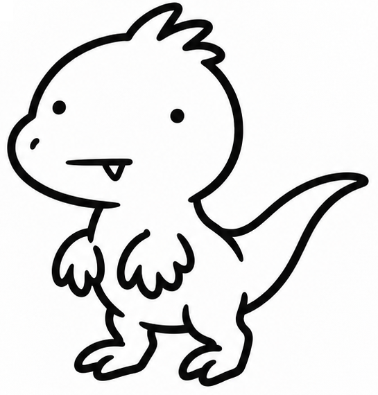

글만 쓰고 끝내면
손님도 그냥 나갑니다
러셀 브런슨의 『마케팅 설계자(DotCom Secrets)』를 읽고 내 블로그 운영에 대입해 봤습니다. AI 검색 시대에 조회수만 쫓다 지치지 않으려면 내 관점(캐릭터), 글 끝의 제안(오퍼), 그리고 가치 사다리부터 깔아야 합니다.

정보만 주면 읽고 바로 뒤로 가기 누름…책에 나오는 마케팅 용어 3개, 블로그 말로 바꾸면 이렇습니다
어려운 퍼널 용어를 외울 필요 없습니다. 우리가 매일 쓰는 블로그 포스팅 하나에 그대로 대응됩니다.
“내 생각이 빠진 요약글은 AI가 3초 만에 대체합니다”
공식 문서 요약이나 기능 나열은 ChatGPT가 더 잘합니다. 독자가 내 블로그를 다시 찾는 건 ‘내가 겪은 삽질’과 ‘나는 왜 이렇게 판단했는가’라는 관점(Polarity) 때문입니다.
“감사합니다로 글을 끝내면 100% 이탈합니다”
전통적인 블로그는 정보만 주고 인사하며 끝납니다. 반면 퍼널형 글은 통념을 깨는 질문(Hook) → 확인·실패 과정(Story) → 독자가 바로 가져갈 선물(Offer)로 닫힙니다.
“시식 코너 옆에 본품 매대가 있어야 가게가 돕니다”
검색 유입 글(무료 시식) 하나에 애드센스 광고만 붙여두면 방문자 99%는 영원히 사라집니다. 독자의 문제 깊이에 맞춰 한 계단씩 올라가는 사다리가 필요합니다.
단발성 블로그 vs 가치 사다리가 있는 블로그
와우(WoW)에서 던전 입구까지 파티원을 힘들게 소환해 놓고 그냥 해산하면 허무하듯, 블로그 유입도 다음 던전으로 이어져야 자산이 됩니다.
트래픽을 3배 늘리는 것 vs 사다리 한 칸을 더 놓는 것
아래 슬라이더를 움직여 ‘애드센스 단독 모델’과 ‘가치 사다리(도구+저가 전자책) 결합 모델’의 산술적 차이를 비교해 보세요.
※ 환율 1,380원, 방문자당 1.2 페이지뷰 기준의 가상 시나리오 단순 산술 계산입니다. 실제 수익이나 전환율을 보장하지 않으며, 유료 판매 시에는 결제 수수료·환불 응대·사업자 세무 신고 등의 운영 부담이 발생합니다.
제가 운영하는 3개 채널에 대입해 본 결과
책을 읽고 돌아보니 그동안 만든 캐릭터(벨로키·트리노·파로)와 GitHub Pages HTML 도구들이 결국 이 사다리의 부품이었습니다.
| 요소 | TECHTAEK (테크·AI 실험실) | 배당노마드 (미국 배당·현금흐름) | TAEK2 (생활금융·절세 탐정) |
|---|---|---|---|
| 매력적인 캐릭터 | 벨로키 (A) — 직접 돌려보고 실패 로그까지 까보는 클라우드·AI 실험자 | 트리노 — 세전 환상 대신 세후 원화 현금흐름을 따지는 배당 여행자 | 파로 — 월급날과 결제일 사이의 구멍을 공식 규정으로 찾는 탐정 |
| 1단 (무료 글) | 모델 비용 비교, 보안 패치, 오픈소스 실측 후기 | SCHD·QLD 매수일 비교, 배당금 변동 원인 분석 | 자녀 증여 한도, 부부 계좌 세금선, 연금저축 체크 |
| 2단 (무료 도구 Offer) | 토큰 비용 계산기, 작업 순서 인터랙티브 HTML | 원화 배당금 진단기, 적립식 백테스트 비교 페이지 | 부부 세금선 체크리스트, 증여 복리 계산기 |
| 3단 (묶음 자산) | 전자책 『쌓아둔 메모를 다시 꺼내 쓰는 법』 (무료 웹/PDF 공개) | 배당·성장 포트폴리오 리밸런싱 핸드북 (기획 후보) | 가계 현금흐름 & 절세 점검 시트 템플릿 |
블로그 글쓰기용 후크 - 스토리 - 제안 템플릿
새 글을 쓸 때 빈 화면에서 고민하지 않도록 만든 마크다운 뼈대입니다. 버튼을 눌러 복사해 쓰세요.
1. 포스팅 전체 3단 구조 (Hook-Story-Offer)
## [도입부: 검색 답변 + Hook] - 첫 문단: 독자가 검색한 질문의 핵심 답과 기준을 2문장으로 먼저 제시 (두괄식) - Hook: "다들 A라고 알고 있지만, 실제로 계산/실행해 보니 B에서 구멍이 났습니다." ## [본문: Story & 검증 근거] - 내가 왜 이 문제를 파게 되었는지(배경 질문) - 공식 문서/데이터/실측으로 확인한 비교표 1개 - 내가 틀릴 수 있는 조건(예외 상황·한계) 명시 ## [결론: 내 생각(Attractive Character) + Offer] - 내 관점 한 문단: "제가 실무에서 다시 고른다면 X를 선택합니다. 이유는..." - 다음 행동 제안(Offer): "내 숫자를 직접 넣어보실 분은 아래 계산기/체크리스트를 바로 열어보세요."
2. 글 하단 Offer 콜아웃 문구 3종
[유형 A: 인터랙티브 도구 연결형] 👉 눈으로만 읽으면 내 상황과 헷갈립니다. 내 숫자를 직접 넣어 비교할 수 있는 [무료 계산기/설명 페이지]를 따로 만들어 두었으니 바로 테스트해 보세요. [유형 B: 복사용 체크리스트/지시문 제공형] 👉 오늘 글의 핵심 설정을 매번 다시 찾지 않도록 아래 코드 블록에 [복사용 체크리스트]를 정리해 두었습니다. 내 노트에 붙여넣고 하나씩 지워가며 점검해 보세요. [유형 C: 심화 허브/전자책 연결형] 👉 이 주제를 처음부터 끝까지 한 권으로 묶어둔 [무료 전자책/허브 가이드]가 있습니다. 단편 글 대신 전체 흐름을 잡고 싶다면 이어서 읽어보세요.
⚠️ 주의: 모든 글에 스토리를 길게 깔면 오히려 독자가 도망갑니다
에러 메시지 해결법, 명령어 옵션, 세금 납부 기한처럼 독자가 10초 안에 답만 찾고 나가야 하는 검색어에 내 성장 배경(Backstory)부터 길게 늘어놓으면 바로 뒤로 가기를 누릅니다. 그래서 첫 문단에는 무조건 검색 질문의 답을 먼저 주고, 그 답을 확인한 뒤 더 깊이 알고 싶은 독자에게만 스토리와 도구(Offer)를 건네는 순서가 안전합니다.